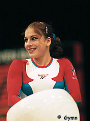

Elena Produnova (RUS)
1997 World AA Bronze Medalist
2000 American
Cup Champion
 |
Medal Total
Olympic
Games: 1 Silver, 1 Bronze
World
Championships: 2 silver, 2 bronze
European Championships:
1 Gold, 1 Silver, 1 Bronze
Elena was born on February 15, 1980, in Rostov-on-Don. Her coach was Ruslan Lavrov, who also coached Svetlana Grozdova. Produnova was a powerful vaulter and tumbler, and excelled at front tumbling (front layout, punch double front on FX; double front dismount from B; handspring double front on V). She retired after the 2000 Olympics and married former gymnast Dmitry Ismetov in 2001. She works as a coach.
Competition Results
1995
International Junior Championships: 5th AA, 2nd B,
5th UB
Jr. European Team Semifinals: 2nd AA
Ljubljana International: 3rd AA, 1st B, 2nd FX
World Championships (Sabae): 4th Team
1996
RUS Championships: 10th AA
1997
Glasgow Grand Prix: 2nd FX, 3rd UB, 5th V, 7th FX
Pitari Cup: 2nd AA
RUS Championships: 9th AA
RUS Cup: 5th AA
World Championships (Lausanne): 2nd Team, 3rd AA,
3rd FX, 8th B
1998
Chunichi Cup: 4th AA, 3rd V
Cottbus International: 1st B, 2nd V, 2nd FX, 5th UB
DTB Cup: 4th V, 4th B, 5th UB, 5th FX
French International: 8th AA, 2nd FX, 5th V, 7th UB
Goodwill Games: 10th AA, 5th FX
RUS Championships: 5th AA
RUS Cup: 2nd AA, 2nd V
Sagit Cup: 5th UB
Swiss Cup: 1st B, 5th FX, 6th UB
World Cup: 6th V, 6th UB, 6th FX
1999
American Cup: 2nd AA
DTB Cup: 2nd V, 4th UB, 4th FX, 5th B
Gander Memorial: 4th AA
Glasgow Grand Prix: 1st FX, 2nd UB, 3rd V, 3rd FX
RUS Championships: 1st AA
RUS Cup: 1st AA
Samboo International: 1st V, 5th UB, 6th FX
University Games: 1st Team, 1st V, 1st B, 2nd AA
World Championships (Tianjin): 2nd Team, 4th AA, 4th V, 4th
UB, 4th FX
World Stars: 1st AA
Zurich Grand Prix: 2nd B, 3rd V, 3rd UB, 3rd FX
2000
American Cup: 1st AA, 1st V, 1st UB, 1st B, 1st FX
Cottbus International: 1st FX
European Championships: 1st Team, 2nd FX, 3rd
UB, 4th V
Olympic Games: 2nd Team, 3rd B
RCA Gymnastics Challenge: 1st AA
RUS Championships: 1st AA
RUS Cup: 2nd UB, 2nd B, 5th FX
World Stars: 1st AA
This page was created on January 27, 2000 and was
last updated on December 19, 2004.
© Gymn Forum